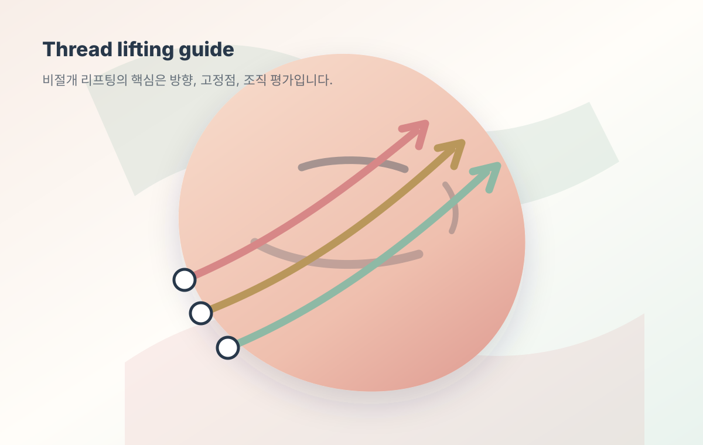
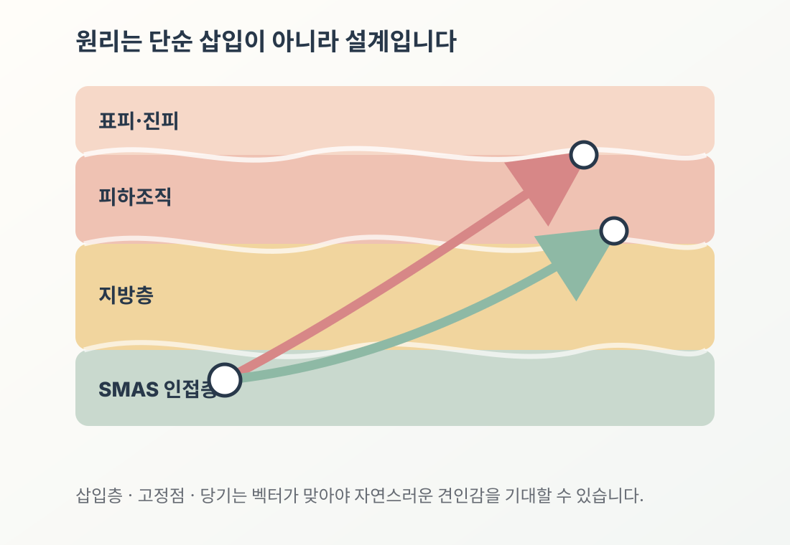
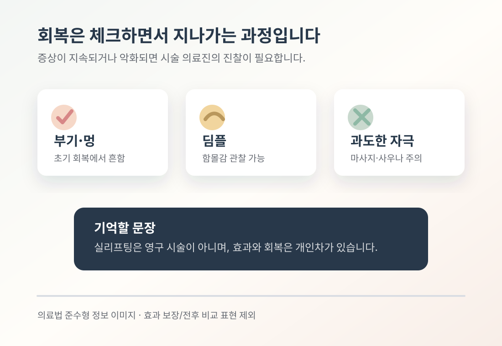

실리프팅이란? 원리·종류·효과·부작용 정리

처진 볼, 깊어진 팔자, 흐려진 턱선. 안면거상 수술까지는 부담스럽고, 시술은 안 받자니 변화가 아쉬우신 분들이 가장 먼저 검색하시는 키워드가 바로 "실리프팅"입니다. 이번 글에서는 실리프팅이 정확히 어떤 시술인지, 어떤 원리로 효과가 나타나는지, 어떤 부작용을 예상해야 하는지를 임상 근거 중심으로 정리해드립니다.
실리프팅이란 정확히 어떤 시술인가요
실리프팅은 미세한 흡수성 실(thread)을 피부 진피층 또는 피하조직에 삽입하여 처진 조직을 들어올리는 비절개 안면 윤곽 시술입니다. 실 표면에 작은 미늘(cog) 또는 돌기가 가공되어 있어 조직을 걸어 올리는 즉각적인 견인력을 만들고, 동시에 시간이 지나면서 실 주변으로 콜라겐이 새롭게 생성되는 이중 작용 기전이 보고됩니다. 절개·박리가 필요한 안면거상술과 달리 회복 기간이 짧다는 점이 실리프팅이 비수술 리프팅의 대표 카테고리로 자리잡은 배경입니다.

어떤 실을 쓰나요 — PDO·PLLA·PCL 차이
임상에서 가장 많이 쓰이는 흡수성 실은 세 종류입니다. PDO(폴리디옥사논)는 체내 흡수 기간이 약 6~8개월로 가장 짧고, PLLA(폴리-L-락틱애시드)는 약 12개월, PCL(폴리카프로락톤)은 약 12~18개월에 걸쳐 분해됩니다.
동물 모델 연구에서 PCL은 PDO·PLLA 대비 더 치밀한 콜라겐 형성과 분해 산물에 의한 점진적 콜라겐 유도가 관찰되었고, 한국인 안면 해부 특성을 반영한 PDO 모노필라멘트 시술 프로토콜도 별도로 제안되어 있습니다. 실 종류는 시술 부위·조직 상태·환자 연령에 따라 달리 선택해야 하며, 단일 실 한 종류가 모든 케이스에 정답인 경우는 없습니다.
효과는 언제 나타나고 얼마나 유지되나요
견인 효과는 시술 직후 즉각 관찰됩니다. 12개 임상연구를 종합한 체계적 리뷰에서 시술 직후 평가 시 GAIS, Wrinkle Severity Scale, FACE-Q 등 표준 척도 전반에서 개선이 보고되었으며, 가장 긴 추적 기간은 2년이었고 그 이상의 장기 효능 자료는 아직 부족합니다.
다만 장기 만족도는 시간이 지남에 따라 점진적으로 감소하는 경향이 있습니다. 별도 메타분석에서는 시술 직후 만족도가 약 98%로 보고된 반면 6개월 시점에는 약 88%로 감소한 것으로 보고되었습니다. 즉, 실리프팅은 일회성 영구 시술이 아니라 실 종류·개인 차에 따라 유지 기간이 달라지는 시술이라는 관점이 정확합니다.
회복과 부작용, 어디까지 예상해야 하나요

총 26개 연구 메타분석에서 보고된 주요 부작용 발생률은 다음과 같습니다.
- 부기: 약 35% (가장 흔함)
- 딤플(함몰): 약 10%
- 감각 이상: 약 6%
- 실 가시화·촉지: 약 4%
- 감염: 약 2%
- 실 노출(돌출): 약 2%
또한 흡수성 실은 비흡수성 실 대비 감각 이상(3.1% vs 11.7%)과 실 노출(1.6% vs 7.6%) 발생률이 낮게 보고되어, 안전성 측면에서 흡수성 계열의 사용이 보편적입니다. 부기·멍은 대개 1~2주 내 회복되며, 딤플은 대부분 손 마사지 또는 위치 조정으로 교정 가능한 범위에서 관찰됩니다. 모든 시술에는 개인차가 있으며 의료진 상담을 통한 사전 평가가 중요합니다.
어떤 분께 권장되나요
볼·팔자·이중턱·턱선 등 국소적 처짐의 초·중기 단계에서 비절개로 윤곽 개선을 원하시는 분들이 일반적인 적응 대상입니다. 반대로 임신·수유 중이신 분, 자가면역 질환을 진단받으신 분, 켈로이드 체질, 항응고제 복용 중이신 분은 시술 전 의료진과의 충분한 상담이 필요합니다. 국내에서 사용되는 흡수성 리프팅 실은 식약처(MFDS) 허가 의료기기에 한해 시술해야 하며, 허가 정보는 의료기기 정보포털에서 확인 가능합니다.
자주 묻는 질문
실리프팅 한 번이면 다시 안 해도 되나요?
실리프팅은 일회성 영구 시술이 아닙니다. 사용한 실의 종류에 따라 PDO 6~8개월, PLLA 약 12개월, PCL 약 12~18개월에 걸쳐 흡수되며, 장기 만족도는 시간이 지남에 따라 점진적으로 감소하는 경향이 있어 재시술 시기는 개인차에 따라 결정합니다.
안면거상술과 어떤 점이 다른가요?
안면거상술은 피부·근막을 절개·박리하여 들어올리는 외과 수술이며, 실리프팅은 비절개 시술입니다. 회복 기간과 변화 폭이 다르므로 처짐의 단계와 환자의 회복 환경을 모두 고려해 선택하는 것이 일반적입니다.
실이 느껴지거나 보일 수 있나요?
메타분석상 실 가시화·촉지는 약 4%, 노출은 약 2%로 보고됩니다. 시술 직후 일시적인 촉지감은 회복 과정에서 줄어드는 양상이 보고되며, 지속될 경우 의료진 진찰이 필요합니다.
실리프팅 후 관리는 어떻게 하나요?
시술 후 일정 기간 과도한 표정·안면 마사지·치과 시술·고온 사우나 등을 피하시는 것이 권장됩니다. 회복 양상은 개인의 피부 상태와 생활 습관에 따라 차이가 있을 수 있어 시술 의료진의 개별 안내를 따르는 것이 좋습니다.
근거 자료
- Aesthetic Plastic Surgery — Thread lifting meta-analysis (효과·만족도·부작용 발생률).
- Systematic review (12 RCT/관찰연구) — GAIS·Wrinkle Severity Scale·FACE-Q 결과.
- Animal model study — PCL vs PDO·PLLA 콜라겐 형성 비교.
- 흡수성 봉합사 분해 특성 검토 (PDO·PLLA·PCL).
- 안면거상술 vs 비절개 리프팅 임상 비교.
- 한국인 안면 해부 기반 PDO 모노필라멘트 시술 프로토콜.
- 식품의약품안전처 의료기기 정보포털.
※ 본 게시물은 의료법 제56조 및 보건복지부 의료광고 가이드라인을 준수하여 작성되었습니다.
※ 시술의 효과와 회복 양상은 개인의 피부 상태·연령·생활습관에 따라 차이가 있을 수 있습니다.
※ 모든 의료 시술에는 부작용이 발생할 수 있으며, 시술 전 의료진과의 충분한 상담이 필요합니다.
※ 본 게시물은 일반적인 의학 정보 제공을 목적으로 하며, 특정 시술의 효능·안전성을 보장하지 않습니다.